Lesson 4 – Buildings, Walls and Wall Failure
Contents
Lesson 4 – Buildings, Walls and Wall Failure#
Overview#
Lesson 4 will outline the process of setting up buildings and walls and defining wall failure parameters in a FLO-2D project using the Plugin for QGIS. Apply these instructions after Lesson 1, 2 or 3 are completed.
This video shows the full process of this tutorial.
Required Data#
The lesson makes use of buildings and walls shapefiles.
File |
Content |
Location |
Buildings.shp |
Building shapefile |
QGIS Lesson 4 |
Walls.shp |
Walls shapefile |
Project Location C:\Users\Public\Documents\FLO-2D Pro Documentation\Example Projects\QGIS Tutorials
Check these folders to ensure the data is available before starting the lesson.
Step-by-Step Procedure#
To setup a FLO-2D flood simulation use these steps.
Open Lesson 1, 2 or 3 completed project;
Assign buildings;
Assign walls;
Save and export;
Run the simulation.
Step 1: Open project QGIS and load the FLO-2D Plugin data#

Search the start menu and run the “QGIS Desktop” program.
QGIS Lesson 1, 2 or 3 can be used to for this project. Click Open Project and navigate to Example Projects. If QGIS Lesson 1, 2 or 3 are complete, choose any of these files to continue with Lesson 4. This tutorial will continue from Lesson 3.
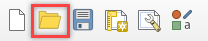
C:\Users\Public\Documents\FLO-2D PRO Documentation\Example Projects\QGIS Tutorials\QGIS Lesson 1\QGIS Lesson 1.qgz
Click Yes in the FLO-2D window to Load the model.
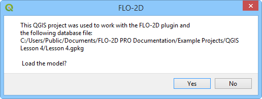
Step 2: Assign buildings#
Note
The video at the top of this tutorial shows how to remove, add or modify the building polygons.
Drag the Buildings.shp shapefile onto the map space.
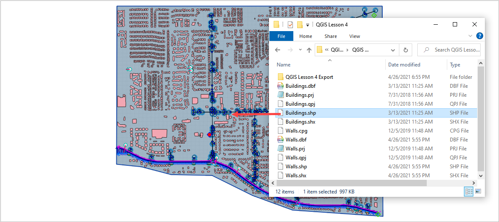
The Buildings.shp shapefile needs 3 Attributes.
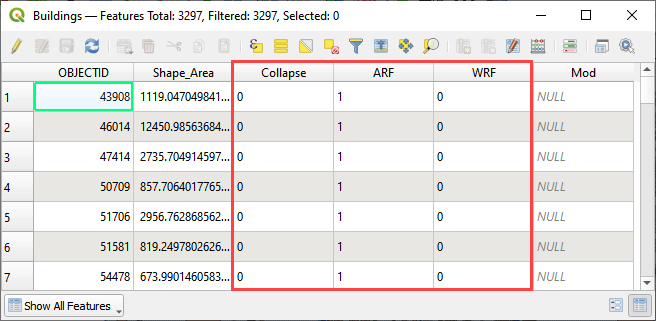
These fields represent switches to set the calculation control for each building.
Collapse = 0 will ignore building collapse settings.
Collapse = 1 will apply the control for building collapse. If building collapse is needed, look in the Data Input manual for an extra data file.
ARF = 0 will ignore the ARF calculation.
ARF = 1 will calculate the ARF calculation.
WRF = 0 will ignore the spatially variable WRF but apply a T line to any totally blocked cell.
WRF = 1 will calculate the spatially variable WRF and apply a T line to any totally blocked cell.
Click the Evaluate Reduction Factors (ARF and WRF) icon.
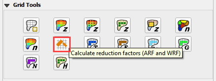
Set up the parameters and click OK
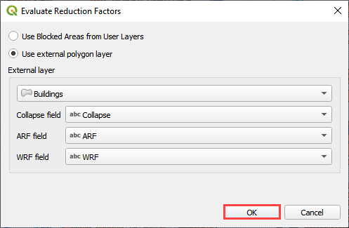
Close OK the window.
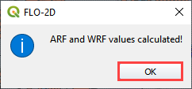
The new layers show ARFs and Blocked Areas Polygons.
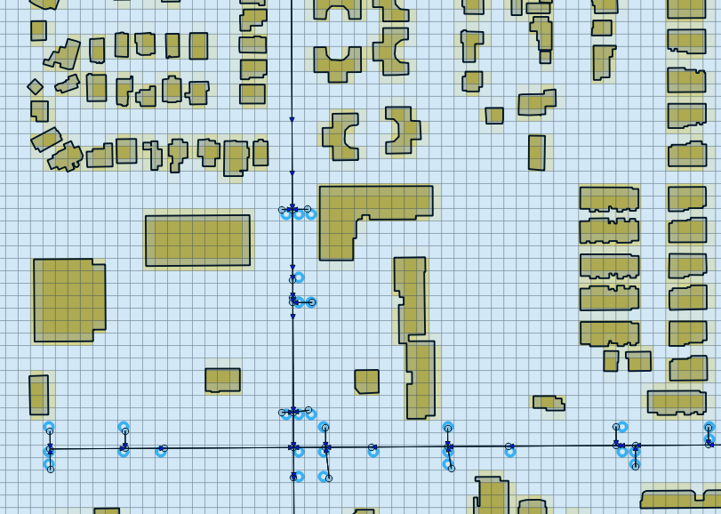
Step 3: Assign walls#
Note
The video at the top of this tutorial shows how to add, delete, or modify wall polylines.
Clean the map. Uncheck Buildings (user layer) and ARF/WRF (schema layer). This will improve map loading speed.
Click Boundary Condition Points in the User Layer group. Drag the file Walls.shp into the map space.
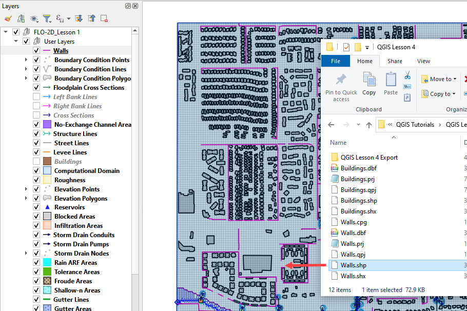
If the walls are hard to see, make an adjustment to the symbology properties. Double click Walls layer to open the properties window.
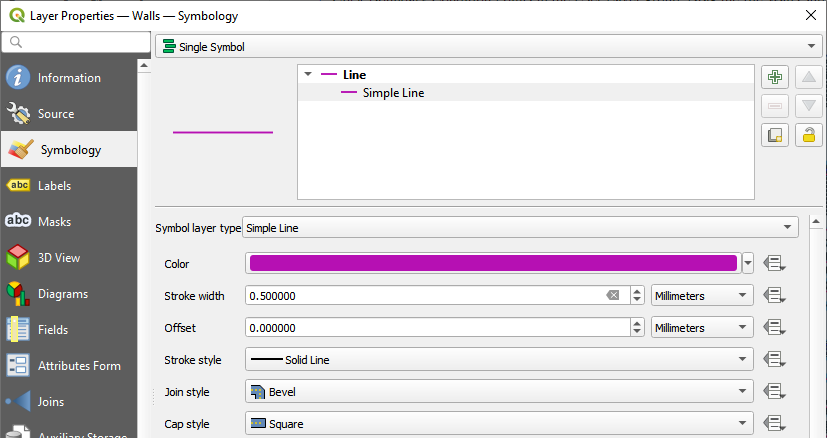
Click the Levee Elevation Tool from the FLO-2D Toolbar and click the Add Walls to User Levee Lines button.
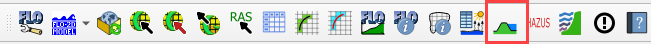
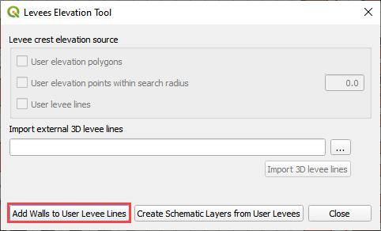
Set the wall elevation and failure fields and click Add Walls to User Levee Lines.
Check Levee Failure
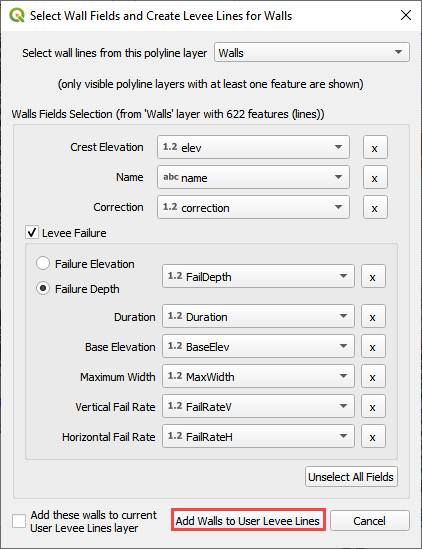
The levees were added to the user layer. Click OK.
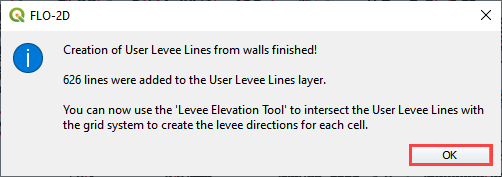
Note
If an error message was displayed, move the Walls Layer to the User Layer Group.
Click the Levee Elevation Tool from the FLO-2D Toolbar and click the Create Schematic Layers from User Levees button.
In this case, only levee lines are used. Uncheck elevation polygons if it is checked.
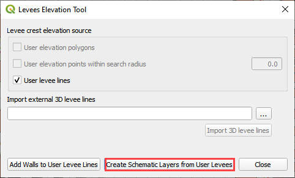
Duplicate levees were identified. Remove them by clicking Yes.
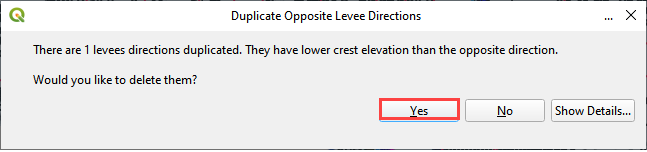
Once the process is complete, the following image will appear. Click OK to close it.
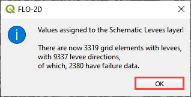
The FLO-2D walls are shown by the red cutoff marks. Visually inspecting them can help QC the data.
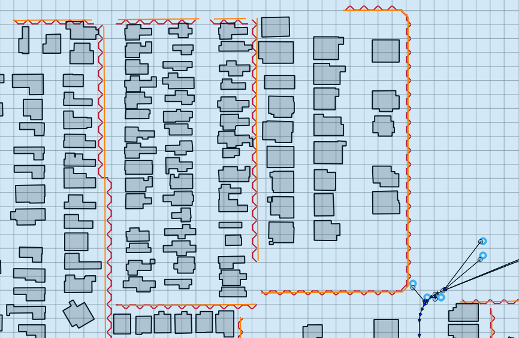
Turn on levee failure by clicking the prescribed failure checkbox on the Levee Failure Widget.
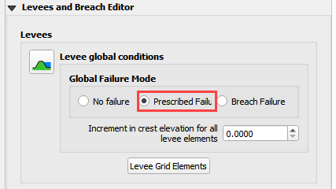
Step 4: Export the project#
Click the Set Control Parameters icon and enter the data in the FLO-2D Toolbar. The following dialog will be displayed, make sure the Area Reduction Factors and Levees component switches are selected.

Click Save.
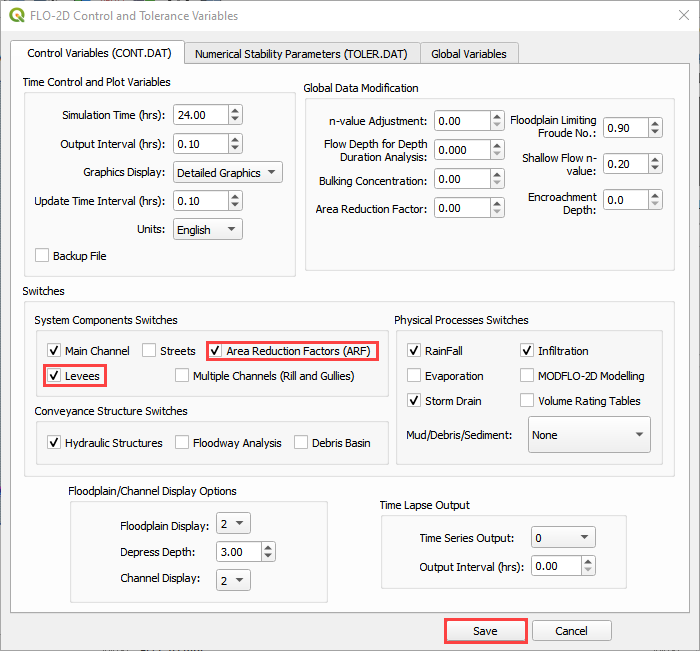
This is a good point to save the project.

Export the data files to the project folder in QGIS Lesson 4.

C:\Users\Public\Documents\FLO-2D PRO Documentation\Example Projects\QGIS Tutorials\QGIS Lesson 4\QGIS Lesson 4 Export
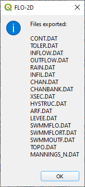
Complete the export by saving the swmm.inp file and clicking through all the remaining messages.
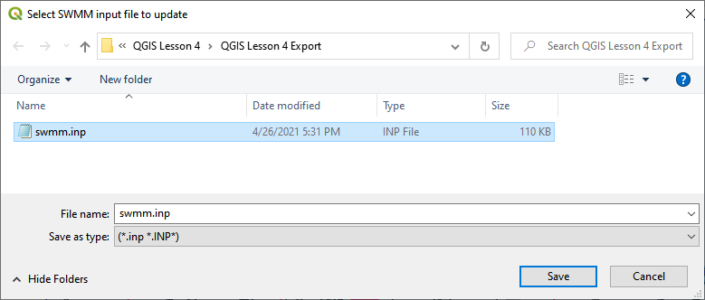
Step 5: Run the simulation#
Click the Run FLO-2D Icon.

Set the Project path and the FLO-2D Engine Path and click OK to start the simulation.
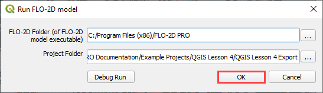
Summary#
This is the completion of a tutorial for adding buildings and walls to a model that is ready to run. This tutorial can be applied to any project once the grid and elevation is assigned.